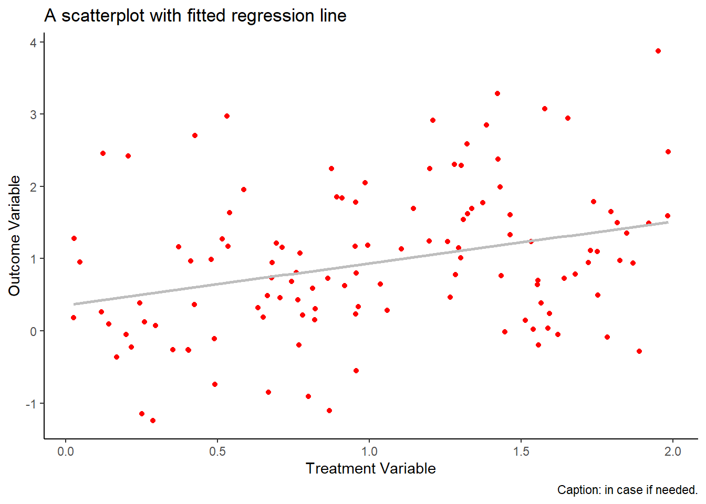
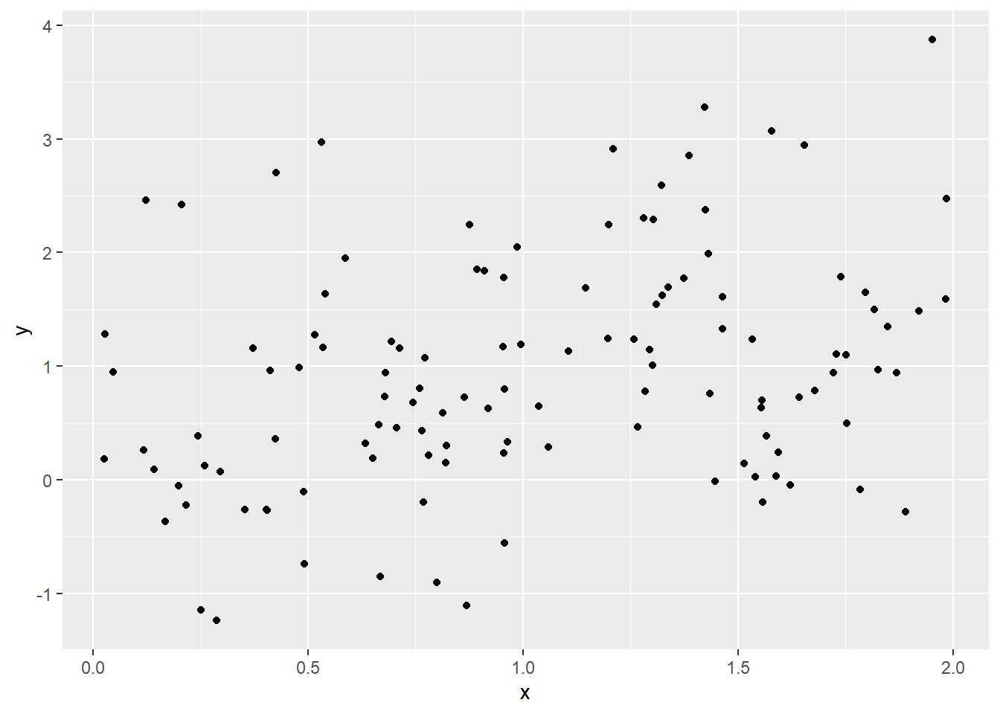
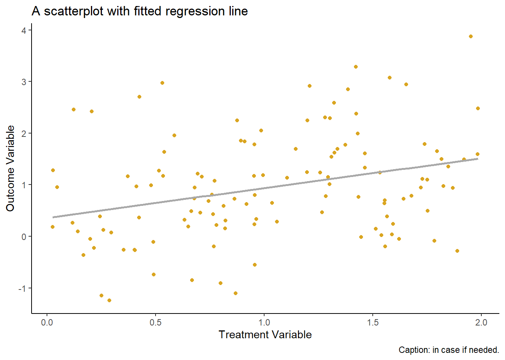
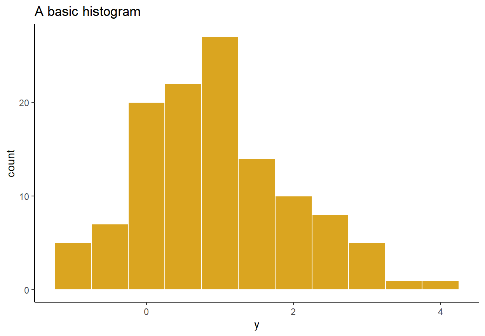

Introduction to R
R is a programming language for data analysis and visualisation. Here I introduce basic commands that should facilitate your understanding of R. You can further enhance your skillset using numerous online resources, as well as your own trial–and–error. To the extent that new features are added to R on a daily basis, there are virtually no limits to how far you can advance your knowledge of this programming language.
We will work in RStudio—the go-to interface for R (as R itself is not an overly user-friendly platform). Thus, you will need to have installed both, R and RStudio on your devise (the latter will ‘find’ and connect with the former on its own). R is available from CRAN, and RStudio is available from RStudio.
Data Management
There are a number of ways in which we can work with data in R. Let’s begin with matrices.
Consider a string of observations:
a <- c(1,0,4,3,2,6)
a## [1] 1 0 4 3 2 6A string, unlike a vector, has no dimensions. But we can transform it to a \(n \times 1\) vector using the as.matrix() function:
b <- as.matrix(a)
b## [,1]
## [1,] 1
## [2,] 0
## [3,] 4
## [4,] 3
## [5,] 2
## [6,] 6The result is a \(6 \times 1\) vector, or a column matrix. To obtain a \(1 \times 6\) vector, or a row matrix, we transpose the foregoing vector using the t() function:
bt <- t(b)
bt## [,1] [,2] [,3] [,4] [,5] [,6]
## [1,] 1 0 4 3 2 6dim(bt)## [1] 1 6We can create any \(n \times k\) matrix, using the matrix() function. For example, consider a \(3 \times 2\) matrix:
B <- matrix(a,nrow=3,ncol=2)
B## [,1] [,2]
## [1,] 1 3
## [2,] 0 2
## [3,] 4 6We can add column names and row names to this matrix:
colnames(B) <- c("c1","c2")
rownames(B) <- c("r1","r2","r3")
B## c1 c2
## r1 1 3
## r2 0 2
## r3 4 6If, at this point, we would like to only work with, say, the first column of the matrix, we can call it using its column number, (1), or the column name, (“c1”), as follows:
B[,"c1"]## r1 r2 r3
## 1 0 4Similarly, if we want to refer to a matrix element, say \(b_{3,2}\), we can do this as follows:
B[3,2]## [1] 6Matrix multiplication is done using %*% command, granted that the two matrices are compatible. For example, we obtain a product of matrix \(B\) and a new \(2 \times 1\) vector, \(d\), as follows:
d <- as.matrix(c(5,-2))
Bd <- B%*%d
Bd## [,1]
## r1 -1
## r2 -4
## r3 8We can add columns (and rows) to the existing matrix using a cbind() function:
c3 <- c(0,1,0)
D <- cbind(B,c3)
D## c1 c2 c3
## r1 1 3 0
## r2 0 2 1
## r3 4 6 0We can invert a(n invertible) matrix using the solve() function:
Di <- solve(D)
Di## r1 r2 r3
## c1 -1.0000000 0 0.5000000
## c2 0.6666667 0 -0.1666667
## c3 -1.3333333 1 0.3333333Data Visualisation
One of the comparative advantages of R is in its graphing aesthetics. Currently, the best graphs are plotted via the ggplot2 package. Notably, this package requires that the data are maintained in the data.frame or the data.table format (for the latter, you need to load the data.table package). Let’s create a data.table object and observe its few lines:
set.seed(1)
x <- runif(120,0,2)
y <- 0.2+0.7*x+rnorm(120)
library(data.table)
dt <- data.table(y=y,x=x)
dt## y x
## 1: 2.9733299 0.53101733
## 2: 0.6817335 0.74424780
## 3: 1.6917341 1.14570673
## 4: 1.4994931 1.81641558
## 5: -0.2609185 0.40336386
## ---
## 116: 0.1835826 0.02615515
## 117: 1.9894321 1.43113213
## 118: 2.4197029 0.20636847
## 119: 1.8521905 0.89256870
## 120: 2.3040499 1.28020209Now, let’s load ggplot2 and generate a simple scatter plot:
library(ggplot2)
ggplot(dt,aes(x=x,y=y))+
geom_point()
We can augment this plot in a number of different ways. Here we change the point color to red, add the fitted regression line to the plot, add labels to the figure, and apply a ‘classic’ background theme:
ggplot(dt,aes(x=x,y=y))+
geom_point(color="goldenrod")+
geom_smooth(method="lm",formula=y~x,se=F,color="darkgray")+
labs(title="A scatterplot with fitted regression line",
x="Treatment Variable",
y="Outcome Variable",
caption="Caption: in case if needed.")+
theme_classic()
As another example, let’s generate a histogram (of the dependent variable):
ggplot(dt,aes(x=y))+
geom_histogram(color="white",fill="goldenrod",binwidth=.5)+
labs(title="A basic histogram")+
theme_classic()
We typically apply a line plot to illustrate a time series (that are ordered by date). In what follows, we add a date column to our data frame and then plot the dependent variable in the chronological order:
dt$date <- seq(from=as.Date("2000-01-01"),by="month",along.with=y)
ggplot(dt,aes(x=date,y=y))+
geom_line(color="goldenrod")+
labs(title="A basic time series plot",
x="Year",
y="Outcome Variable")+
theme_classic()
Regression Analysis
To illustrate the OLS regression in R, we apply the previously generated \(x\) and \(y\) as independent and dependent variables. To begin, we obtain the least squares estimator “by hand” as follows:
X <- cbind(1,x)
b <- solve(t(X)%*%X)%*%t(X)%*%y
b## [,1]
## 0.3577680
## x 0.5781188This can be easily done using the lm() function:
ols <- lm(y~x)
ols##
## Call:
## lm(formula = y ~ x)
##
## Coefficients:
## (Intercept) x
## 0.3578 0.5781We can apply the summary() function to see the complete set of regression results:
summary(ols)##
## Call:
## lm(formula = y ~ x)
##
## Residuals:
## Min 1Q Median 3Q Max
## -1.9662 -0.5983 -0.1127 0.5639 2.3882
##
## Coefficients:
## Estimate Std. Error t value Pr(>|t|)
## (Intercept) 0.3578 0.1904 1.879 0.062717 .
## x 0.5781 0.1641 3.522 0.000609 ***
## ---
## Signif. codes: 0 '***' 0.001 '**' 0.01 '*' 0.05 '.' 0.1 ' ' 1
##
## Residual standard error: 0.9716 on 118 degrees of freedom
## Multiple R-squared: 0.09514, Adjusted R-squared: 0.08748
## F-statistic: 12.41 on 1 and 118 DF, p-value: 0.0006091